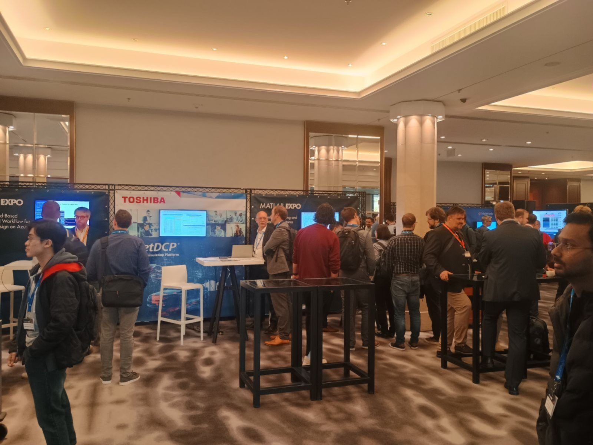
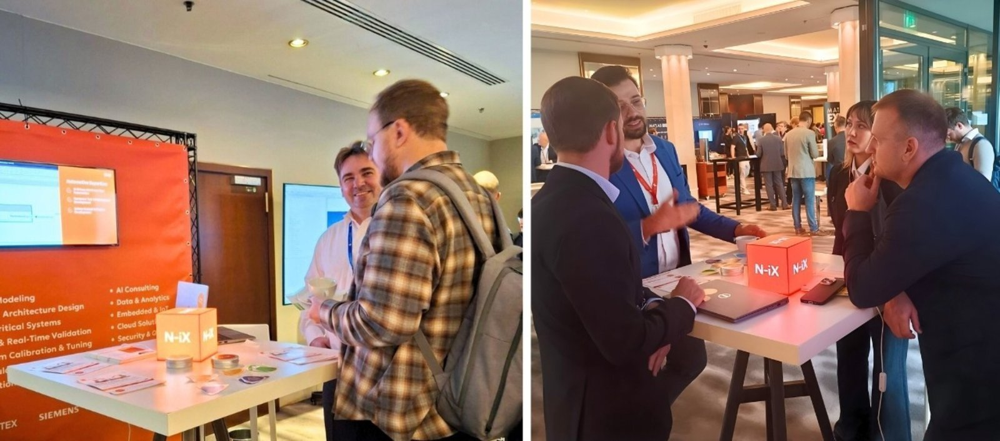
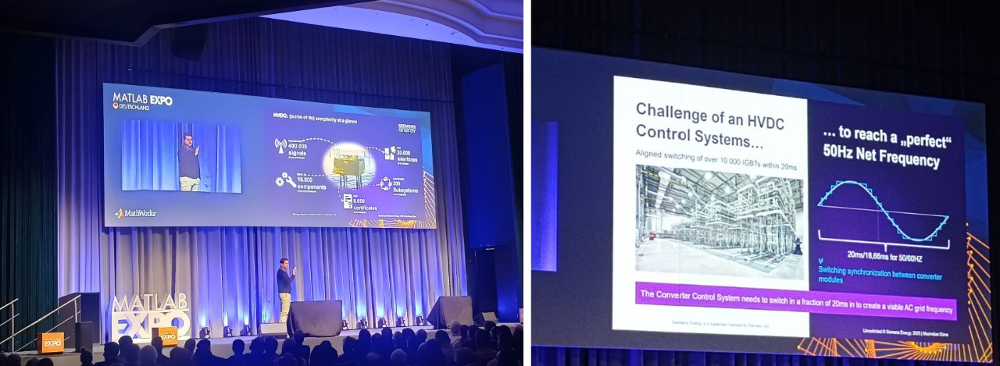

MATLAB EXPO Deutschland 2025: key themes and takeaways
In brief
MATLAB EXPO 2025 in Munich was a useful cross-section of where engineering is going: tighter software–hardware integration, model-based development, certification-oriented tooling, and AI on the edge — on real hardware, close to sensors and real timing constraints.
Key takeaways
- The focus has shifted from isolated domains to integration: AI, embedded, V&V, systems engineering, and real-time execution now form one continuous engineering loop.
- FuSa and traceability are becoming the engineering platform itself: requirements → model/code → tests → reports, with automation and quality gates throughout.
- PIL and HIL are no longer exotic: they are a standard part of a serious V-model, from silicon-level validation to full-system integration.
- Energy systems such as HVDC/FACTS show what large-scale engineering looks like: software practices literally help keep gigawatts within tolerance.
Context and role
The N-iX team attended the event and talked with visitors at the stand. For me this format was useful because it combined practical conversations in robotics, automotive, and critical systems with first-hand access to industry trends.
Most visible directions
- AI in engineering, including embedded and edge scenarios rather than cloud-only narratives.
- Software + hardware integration and system design.
- V&V / QA for both models and code, with growing automation.
- Functionally safe systems and practical certification workflows.
- Control, filtering, and DSP as the base layer for “smart” systems.
It was clear that automotive is no longer the only headline domain. Aerospace and energy stand beside it, bringing equally complex control loops, quality requirements, and scalable development processes.
Tooling for FuSa and traceability
The central message was straightforward: compact teams can build certified systems much more efficiently when their tools stitch together the full lifecycle. In the MathWorks ecosystem, that usually means a combination of:
- Polyspace for code analysis and MISRA-oriented checks,
- Simulink Check for model verification,
- Requirements Toolbox for linking requirements,
- Simulink Test and Simulink Coverage for tests and coverage,
- Simulink Report Generator for automated reporting,
- System Composer and AUTOSAR Blockset for architecture and portability.
Real-time and field-oriented solutions
Besides the classic Simulink-oriented flow, it was good to see tooling that directly supports real-time practice: Speedgoat-like hardware platforms and specialized interfaces or signal generators for ECU debugging and validation. That is a strong sign that the ecosystem lives not only in academic examples, but in physical benches and production-oriented workflows.
Keynotes that stayed with me
AI on the intelligent edge. A semiconductor-vendor perspective highlighted on-chip execution, resource optimization, SDKs, data-centric workflows, hardware accelerators, and a strong focus on FuSa.
HVDC control. One of the strongest energy examples was control of HVDC systems, where enormous numbers of power elements must be synchronized inside very tight timing windows. The lesson was that “system simplicity” is really about structuring models, subsystems, tests, and validation so the team can scale without losing control over the product.
Conclusion
MATLAB EXPO 2025 reinforced a simple point: innovation today is less about individual technologies and more about integration. Edge AI, model-based development, FuSa/traceability, and real-time tooling together form the backbone of modern critical systems in automotive, energy, and aerospace.
Note: this post is a paraphrased summary of my personal takeaways from the event and does not reproduce corporate content.
Photos


